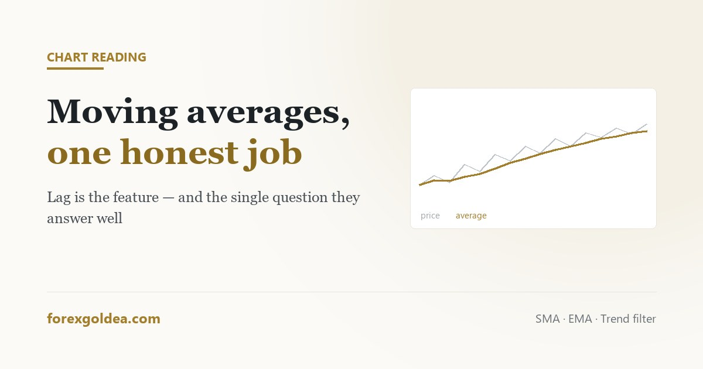

Moving averages, and the one job they're good at

A moving average is the least glamorous line on a chart and the most quietly useful. It predicts nothing, lags by design, and generates crossover signals that disappoint almost everyone who trades them directly — and it still earns its place, because it answers one question better than anything else on the screen.
In short a moving average is the average closing price over the last N candles, redrawn each candle. It lags price by construction, and that lag is the feature: it strips out short-term noise so the underlying direction becomes legible. Its one reliable job on a gold chart is answering “which way is this trending, and is price stretched from it?” The 200-period matters mainly because so many participants watch it; the 50 is a workable trend filter. Crossover signals such as the golden cross are widely quoted and, taken alone, arrive late and produce frequent false starts in choppy conditions.
What the line is doing
Take the closing prices of the last 50 candles, add them up, divide by 50, plot the dot. Move forward one candle and repeat. That is a 50-period simple moving average, and there is nothing else inside it.
Because every value depends on candles that have already closed, the line necessarily arrives after the move. Traders often treat that lag as a flaw to be engineered away with shorter settings. It is not a flaw. Lag is precisely the mechanism that removes the small oscillations you did not want to react to. An average with no lag would simply be price, and price is the thing that was too noisy to read.
Simple or exponential, and does it matter
A simple moving average weights every candle in the window equally. An exponential moving average weights recent candles more heavily, so it turns sooner.
| Simple (SMA) | Exponential (EMA) | |
|---|---|---|
| Responds | Slower | Faster |
| Whipsaws in chop | Fewer | More |
| Suits | Judging the larger trend | Tracking an active move |
| Watched by others | Heavily, at 200 and 50 | Somewhat, at 20 and 21 |
The honest answer to which is better: on the timeframes most retail traders use, the difference is smaller than the difference made by position size. Pick one, learn how it behaves on gold, and stop revisiting the question. Switching between them after a losing trade is not analysis.
The periods people actually watch
Certain settings matter less for mathematical reasons than for social ones. The 200-period average is significant largely because a very large number of participants, including institutional desks, watch the same line and act around it. That shared attention is self-reinforcing: price reacts there partly because everyone expects it to.
- 200: the long-term reference. Above it, the market is broadly constructive; below it, broadly defensive. Reacted to on daily and 4-hour gold charts.
- 50: the medium-term trend filter. Useful as a simple rule for which direction you are willing to trade.
- 20 or 21: tracks an active move closely. Pullbacks in strong gold trends often stall around it.
Adding all three plus a few extras is where charts stop being readable. Three lines is already a crowd; one, understood properly, is usually more useful than four watched vaguely.
The golden cross problem
The golden cross — the 50 crossing above the 200 — receives more coverage than almost any technical event, and the death cross gets the same treatment on the way down. Both describe something real: a shift in medium-term momentum relative to long-term.
The difficulty is timing. By the time a 50-period average has crossed a 200-period one, a substantial portion of the move has already occurred, because both lines are averages of history. In sideways conditions the two lines cross repeatedly, generating signals in both directions within weeks.
This is not an argument against knowing where the lines are. It is an argument against trading the crossing as an entry. The cross is best read as a description of the regime you are in, not as an instruction.
On gold specifically
Gold suits moving averages better than many instruments, for one reason: when it moves, it tends to move persistently. Currency-driven and rate-driven repricing does not resolve in an afternoon, so the trend that an average is built to identify is genuinely there often enough to be worth identifying.
The corresponding weakness is that gold's ranges are wide. A pullback to the 50-period average on a 4-hour gold chart can be a $40 journey, which is a very different experience from the same pullback on a currency pair. Anyone placing a stop just beyond an average needs to size the position for the real distance involved — the arithmetic sits in what a pip is worth on gold and how to calculate lot size.
One average, used properly
If you take one thing from this, make it this workflow:
- Put a single 50-period average on the 4-hour gold chart.
- Above it, take long setups only. Below it, short setups only. That is the filter, and it does most of the work.
- Use distance from the line as a stretch gauge: far above it, a pullback is more likely than a fresh entry.
- Take the actual entry from price structure — a level, a break, a retest — not from the average itself.
The average tells you which direction you are allowed to trade. Something else tells you when. Keeping those two jobs separate is most of what separates a useful indicator from a misleading one.
Reader questions
What does a moving average actually do?
It averages recent closes to smooth out noise so the underlying trend is readable. The lag is the mechanism, not a flaw.
Should I use a simple or exponential moving average?
EMAs react faster, SMAs whipsaw less. The difference is smaller than it seems — pick one and learn how it behaves.
Why is the 200 day moving average important?
Because so many participants watch it that reactions there become self-reinforcing. It also separates broadly bullish from bearish regimes.
Is the golden cross a reliable buy signal?
It signals a real momentum shift but arrives late and whipsaws in ranges. Read it as regime context, not as an entry.
What moving average works best on gold?
A 50-period on the 4-hour chart is a solid default. Size positions for gold's wide ranges, not for typical currency-pair distances.
How many moving averages should I have on a chart?
One, occasionally two. More lines mostly add ways to justify a decision you had already made.
Where this leaves you
A moving average will not tell you what happens next, and every attempt to make it do so — shorter settings, more lines, trading the crossover — makes it worse. What it does reliably is answer which way the market has been leaning and whether price has stretched away from that lean. That is one question, answered well, on a chart full of tools that answer several questions badly.
Affiliate disclosure: we earn a commission when you open and fund an account through our partner links, at no extra cost to you.